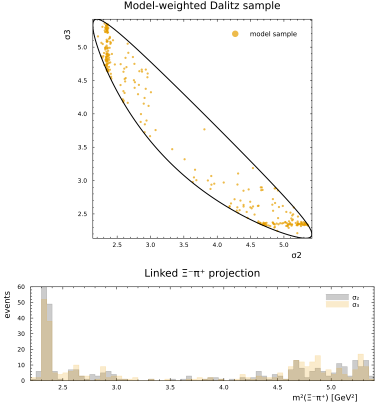
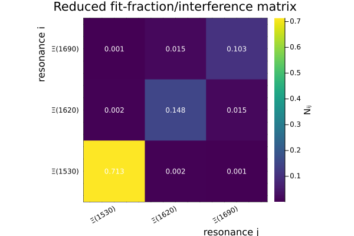

Ξc⁺ → Ξ⁻π⁺π⁺ overlaps
This tutorial builds a compact model for Ξc⁺ → Ξ⁻ π⁺ π⁺ with three prominent Ξ* resonances: Ξ(1530), Ξ(1620), and Ξ(1690).
The goal is not a tuned physics model. Instead, we use the model as a transparent object: we inspect its LS content, build an integral representation of the amplitude overlaps, and then reduce the result to quantities that are often discussed in amplitude analyses.
using ThreeBodyDecays
using HadronicLineshapes: BreitWigner
using LinearAlgebra
using Plots
using Random
using Statistics
theme(:boxed);Kinematics and quantum numbers
Particle labels are fixed by the mass tuple:
- particle 1: Ξ⁻
- particle 2: π⁺
- particle 3: π⁺
Therefore σ₂ is the invariant mass squared of particles (3,1), and σ₃ is the invariant mass squared of particles (1,2). These are the two Ξ⁻π⁺ combinations. The pions are identical in charge, so a realistic model should include both pairings.
const mΞ = 1.32171
const mπ = 0.13957039
const mΞc = 2.46771
ms = ThreeBodyMasses(mΞ, mπ, mπ; m0 = mΞc);
two_js, parities_PC = ThreeBodySpinParities("1/2+", "0-", "0-"; jp0 = "1/2+");
_, parities_PV = ThreeBodySpinParities("1/2+", "0-", "0-"; jp0 = "1/2-");
tbs = ThreeBodySystem(ms, two_js);The parities_PC and parities_PV objects are a small bookkeeping trick. The weak decay does not force a single parity-conserving LS family, so we include both. This gives two production LS couplings per resonance and per pion pairing in this example.
const resonances = [
(; name = "Ξ(1530)", jp = "3/2+", mass = 1.5318, width = 0.0091),
(; name = "Ξ(1620)", jp = "1/2-", mass = 1.6200, width = 0.0320),
(; name = "Ξ(1690)", jp = "1/2-", mass = 1.6900, width = 0.0300),
];Building the model
HadronicLineshapes.BreitWigner can be passed directly as the energy-dependence of a DecayChainsLS object. The rest is a small map over resonances, the two Ξπ pairings, and the two parity choices.
function chain_records(resonance)
map((2, 3)) do k
map((("PC", parities_PC), ("PV", parities_PV))) do (parity_label, Ps)
chains = DecayChainsLS(;
k,
Xlineshape = BreitWigner(resonance.mass, resonance.width),
jp = resonance.jp,
Ps,
tbs,
)
map(chains) do chain
two_ls = chain.Hij.h.two_ls
two_LS = chain.HRk.h.two_ls
qn = (;
l = d2(two_ls[1]),
s = d2(two_ls[2]),
L = d2(two_LS[1]),
S = d2(two_LS[2]),
)
(;
name = resonance.name,
parity = parity_label,
k,
label = "$(resonance.name) k=$k $parity_label",
qn,
chain,
)
end
end
end |>
Iterators.flatten |>
Iterators.flatten |>
collect
end;
records = vcat(chain_records.(resonances)...);A first validation step is simply to ask what the model contains. The LS labels use ordinary angular momenta, while the implementation stores doubled quantum numbers internally.
[(r.label, r.qn) for r in records]12-element Vector{Tuple{String, @NamedTuple{l::String, s::String, L::String, S::String}}}:
("Ξ(1530) k=2 PC", (l = "1", s = "1/2", L = "1", S = "3/2"))
("Ξ(1530) k=2 PV", (l = "1", s = "1/2", L = "2", S = "3/2"))
("Ξ(1530) k=3 PC", (l = "1", s = "1/2", L = "1", S = "3/2"))
("Ξ(1530) k=3 PV", (l = "1", s = "1/2", L = "2", S = "3/2"))
("Ξ(1620) k=2 PC", (l = "0", s = "1/2", L = "0", S = "1/2"))
("Ξ(1620) k=2 PV", (l = "0", s = "1/2", L = "1", S = "1/2"))
("Ξ(1620) k=3 PC", (l = "0", s = "1/2", L = "0", S = "1/2"))
("Ξ(1620) k=3 PV", (l = "0", s = "1/2", L = "1", S = "1/2"))
("Ξ(1690) k=2 PC", (l = "0", s = "1/2", L = "0", S = "1/2"))
("Ξ(1690) k=2 PV", (l = "0", s = "1/2", L = "1", S = "1/2"))
("Ξ(1690) k=3 PC", (l = "0", s = "1/2", L = "0", S = "1/2"))
("Ξ(1690) k=3 PV", (l = "0", s = "1/2", L = "1", S = "1/2"))Now attach a reproducible set of complex couplings. In a fit these would be floating parameters. Bose symmetry constrains the two Ξπ pairings: the coefficient for a k=2 chain and the matching k=3 chain must be the same up to the exchange sign. For two π⁺ bosons we use the symmetric sign.
coupling_by_resonance_and_parity = Dict(
("Ξ(1530)", "PC") => 1.00 + 0.00im,
("Ξ(1530)", "PV") => 0.35 - 0.20im,
("Ξ(1620)", "PC") => 0.75 - 0.15im,
("Ξ(1620)", "PV") => -0.25 + 0.30im,
("Ξ(1690)", "PC") => 0.55 - 0.25im,
("Ξ(1690)", "PV") => -0.20 - 0.20im,
);
exchange_sign = +1;
couplings = [
(r.k == 2 ? 1 : exchange_sign) * coupling_by_resonance_and_parity[(r.name, r.parity)] for r in records
];
[(r.label, couplings[i]) for (i, r) in pairs(records)]
model = ThreeBodyDecay(
getproperty.(records, :label) .=> zip(couplings, getproperty.(records, :chain)),
);A pointwise sanity check is cheap and helpful: the unpolarized intensity is real and positive.
σs0 = randomPoint(ms);
unpolarized_intensity(model, σs0)956.7733455144644Model-weighted Dalitz sample
To see where the model puts events, draw random points in the Dalitz square, keep the physical candidates, and then accept them according to the pointwise intensity.
physical_dalitz_hits = let
rng = MersenneTwister(31)
candidates = map(1:30_000) do _
y2σs(rand(rng, 2), ms)
end
sample = filter(σs -> isphysical(σs, ms), candidates)
ws = unpolarized_intensity.(Ref(model), sample)
sample[ws ./ maximum(ws) .> rand(rng, length(ws))]
end;
p_dalitz = scatter(
getindex.(physical_dalitz_hits, 2),
getindex.(physical_dalitz_hits, 3);
lab = "model sample",
c = 2,
alpha = 0.7,
markerstrokewidth = 0,
markersize = 2.5,
aspect_ratio = 1,
xlab = "σ₂ = m²(Ξ⁻π⁺) [GeV²]",
ylab = "σ₃ = m²(Ξ⁻π⁺) [GeV²]",
title = "Model-weighted Dalitz sample",
)
plot!(p_dalitz, border23(ms); lab = "", c = :black, lw = 2)
p_projection = stephist(
getindex.(physical_dalitz_hits, 2);
bins = 60,
fill = 0,
alpha = 0.2,
lab = "σ₂",
xlab = "m²(Ξ⁻π⁺) [GeV²]",
ylab = "events",
title = "Linked Ξ⁻π⁺ projection",
)
stephist!(
p_projection,
getindex.(physical_dalitz_hits, 3);
bins = 60,
fill = 0,
alpha = 0.2,
lab = "σ₃",
)
plot(p_dalitz, p_projection; layout = grid(2, 1; heights = (0.7, 0.3)), size = (760, 820))
Integral representation of overlaps
Write the model as a coherent sum
\[A(\sigma) = \sum_i c_i\, a_i(\sigma).\]
The integrated intensity is then
\[I = \sum_{ij} c_i^*\, \rho_{ij}\, c_j = c^\dagger \rho c, \qquad \rho_{ij} = \int d\Phi_3\, a_i(\sigma)^* a_j(\sigma).\]
The overlap API works with event samples. We generate a small reproducible phase-space sample, cache the stripped chain amplitudes, and use event_overlap_contributions to build the spin-summed overlap objects.
samples = let
rng = MersenneTwister(12)
candidates = map(1:3_000) do _
y2σs(rand(rng, 2), ms)
end
filter(σs -> isphysical(σs, ms), candidates)
end;
cache = chain_amplitudes(model, samples);
ρ_overlap = mean(event_overlap_contributions(cache));
ρ = ρ_overlap.matrix;
I_from_matrix = real(model.couplings' * Matrix(ρ) * model.couplings)207.8009113920265The same object can be made physical by applying the coefficients. The package then knows how to sum diagonal and interference pieces into the total sample intensity.
physical_ρ = physical_overlap(ρ_overlap, model.couplings);
total_intensity(physical_ρ)207.80091139202653As a validation, this agrees with direct evaluation of the model over the same sample. The equality is exact up to floating-point summation order.
I_direct = mean(σs -> unpolarized_intensity(model, σs), samples)
isapprox(I_from_matrix, I_direct; rtol = 1e-12)trueNormalized overlap matrix
The normalized overlap matrix removes the individual norms:
\[\tilde{\rho}_{ij} = \frac{\rho_{ij}}{\sqrt{\rho_{ii}\rho_{jj}}}.\]
If one of its eigenvalues is close to zero, the basis contains a near-null direction and the coefficients can become ambiguous. If the eigenvalues are comfortably away from zero, this particular basis is numerically healthy.
ρdiag = real.(diag(ρ));
ρtilde = Hermitian(Matrix(ρ) ./ sqrt.(ρdiag * ρdiag'));
round.(real.(eigvals(ρtilde)); digits = 4)12-element Vector{Float64}:
0.568
0.5862
0.5979
0.6131
0.9961
0.9989
1.0011
1.0038
1.3555
1.3977
1.4182
1.4634The diagonal elements are one by construction. Looking at the largest off-diagonal entries tells us which amplitudes overlap most strongly after normalization.
function largest_overlaps(ρtilde, labels; n = 6)
pairs = [
(absρ = abs(ρtilde[i, j]), ρij = ρtilde[i, j], i, j) for i in axes(ρtilde, 1)
for j = 1:(i-1)
]
sort!(pairs, by = x -> x.absρ, rev = true)
return [
(labels[p.i], labels[p.j], round(p.ρij; digits = 3)) for
p in pairs[1:min(n, length(pairs))]
]
end;
largest_overlaps(ρtilde, model.names)6-element Vector{Tuple{String, String, ComplexF64}}:
("Ξ(1690) k=3 PC", "Ξ(1620) k=3 PC", 0.121 + 0.39im)
("Ξ(1690) k=3 PV", "Ξ(1620) k=3 PV", 0.121 + 0.39im)
("Ξ(1690) k=2 PC", "Ξ(1620) k=2 PC", 0.132 + 0.385im)
("Ξ(1690) k=2 PV", "Ξ(1620) k=2 PV", 0.132 + 0.385im)
("Ξ(1620) k=3 PC", "Ξ(1620) k=2 PC", 0.042 + 0.002im)
("Ξ(1690) k=3 PC", "Ξ(1620) k=2 PC", 0.038 + 0.006im)Fit-fraction and interference matrix
A real fit-fraction/interference matrix can be defined by absorbing the couplings into the overlap matrix:
\[N_{ij} = \operatorname{Re}\left[c_i^*\, \rho_{ij}\, c_j\right], \qquad I = \mathbf{1}^T N \mathbf{1}.\]
The API does this with physical_overlap: its matrix is the physical numerator matrix in the chain basis. We only take real and divide by the total when we want a conventional fraction matrix.
N = real.(Matrix(physical_ρ.matrix));
total_intensity(physical_ρ), I_from_matrix
Nfrac = N ./ I_from_matrix;
[(model.names[i], round(Nfrac[i, i]; digits = 4)) for i in eachindex(model.names)]
fit_fractions(physical_ρ; percent = false, sort = false)12-element Vector{@NamedTuple{label::String, fraction::Float64}}:
(label = "Ξ(1530) k=2 PC_{k=2, ij=(l=1, s=1/2), Rk=(l=1, s=3/2)}", fraction = 0.24141918370530555)
(label = "Ξ(1530) k=2 PV_{k=2, ij=(l=1, s=1/2), Rk=(l=2, s=3/2)}", fraction = 0.03923061735211216)
(label = "Ξ(1530) k=3 PC_{k=3, ij=(l=1, s=1/2), Rk=(l=1, s=3/2)}", fraction = 0.3735752250552762)
(label = "Ξ(1530) k=3 PV_{k=3, ij=(l=1, s=1/2), Rk=(l=2, s=3/2)}", fraction = 0.0607059740714824)
(label = "Ξ(1620) k=2 PC_{k=2, ij=(l=0, s=1/2), Rk=(l=0, s=1/2)}", fraction = 0.054497657516968646)
(label = "Ξ(1620) k=2 PV_{k=2, ij=(l=0, s=1/2), Rk=(l=1, s=1/2)}", fraction = 0.014206654309979)
(label = "Ξ(1620) k=3 PC_{k=3, ij=(l=0, s=1/2), Rk=(l=0, s=1/2)}", fraction = 0.05933318194754129)
(label = "Ξ(1620) k=3 PV_{k=3, ij=(l=0, s=1/2), Rk=(l=1, s=1/2)}", fraction = 0.015467197003418873)
(label = "Ξ(1690) k=2 PC_{k=2, ij=(l=0, s=1/2), Rk=(l=0, s=1/2)}", fraction = 0.04023252381541865)
(label = "Ξ(1690) k=2 PV_{k=2, ij=(l=0, s=1/2), Rk=(l=1, s=1/2)}", fraction = 0.008818087411598605)
(label = "Ξ(1690) k=3 PC_{k=3, ij=(l=0, s=1/2), Rk=(l=0, s=1/2)}", fraction = 0.041811775215509515)
(label = "Ξ(1690) k=3 PV_{k=3, ij=(l=0, s=1/2), Rk=(l=1, s=1/2)}", fraction = 0.009164224704769207)The diagonal entries do not have to sum to one: coherent interference can add or remove intensity. That is a useful sense check rather than a bug.
sum(diag(Nfrac)), sum(Nfrac)(0.9584623021093803, 0.9999999999999999)Reduced matrix by resonance
Often we want a resonance-level summary instead of an LS-amplitude-level summary. group_overlap performs the partial sum over all entries that share a resonance name. That includes both Ξπ pairings and both parity structures for each resonance.
resonance_ρ = group_overlap(physical_ρ, getproperty.(records, :name));
resonance_names = resonance_ρ.labels;
Nres = real.(Matrix(resonance_ρ.matrix)) ./ total_intensity(resonance_ρ);
round.(Nres; digits = 4)
Nres_plot = round.(Nres; digits = 3);
nres = length(resonance_names);
pNres = heatmap(
1:nres,
1:nres,
Nres_plot;
xticks = (1:nres, resonance_names),
yticks = (1:nres, resonance_names),
xrotation = 30,
aspect_ratio = 1,
c = :viridis,
xlab = "resonance j",
ylab = "resonance i",
title = "Reduced fit-fraction/interference matrix",
colorbar_title = "Nᵢⱼ",
)
for i in axes(Nres_plot, 1), j in axes(Nres_plot, 2)
annotate!(pNres, j, i, text(string(Nres_plot[i, j]), 8, :white))
end
pNres
The diagonal elements are the resonance fit fractions in this reduced basis.
[(resonance_names[i], round(Nres[i, i]; digits = 4)) for i in eachindex(resonance_names)]
fit_fractions(resonance_ρ; percent = false, sort = false)
interference_terms(resonance_ρ; percent = false, sort = false)3-element Vector{NamedTuple}:
(label_i = "Ξ(1530)", label_j = "Ξ(1620)", fraction = 0.003215261277885567)
(label_i = "Ξ(1530)", label_j = "Ξ(1690)", fraction = 0.002340680385186145)
(label_i = "Ξ(1620)", label_j = "Ξ(1690)", fraction = 0.030999208065304703)This is also easy to validate: the resonance-level matrix still sums to the same total fraction, because reduction is just a partial sum over indices.
sum(Nres), sum(Nfrac)(1.0, 0.9999999999999999)Quiz
Q1. Why do we include both k=2 and k=3 chains for the same Ξ* resonance?
Answer
The two π⁺ particles are identical in charge. Either pion can pair with the Ξ⁻ to form the Ξ* isobar, so the model includes both Ξ⁻π⁺ combinations.Q2. What does a very small eigenvalue of ρtilde mean?
Answer
It means that some linear combination of amplitudes has a tiny integrated norm. The corresponding couplings can be weakly determined or ambiguous.Q3. Why are the k=2 and k=3 couplings tied together?
Answer
The two final-state pions are identical bosons. Exchanging them maps one Ξ⁻π⁺ pairing into the other, so the paired amplitudes are not independent. In this symmetric example their coefficients are equal; in a convention with an exchange phase, they would differ only by that fixed sign.Q4. Why can the sum of diagonal fit fractions be different from one?
Answer
The diagonal terms are incoherent contributions. The total intensity also contains off-diagonal interference terms, which can be positive or negative.Q5. Which API choice makes the overlap calculation transparent in this page?
Answer
The workflow is split into visible stages: `chain_amplitudes` caches the stripped chain amplitudes, `event_overlap_contributions` or `chain_overlap_matrix` builds the chain-basis overlaps, `physical_overlap` applies couplings, and `group_overlap` reduces the basis. Each object still exposes labels and a matrix, so it is easy to inspect the calculation.This page was generated using Literate.jl.